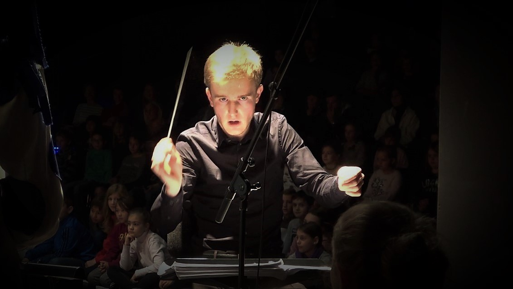
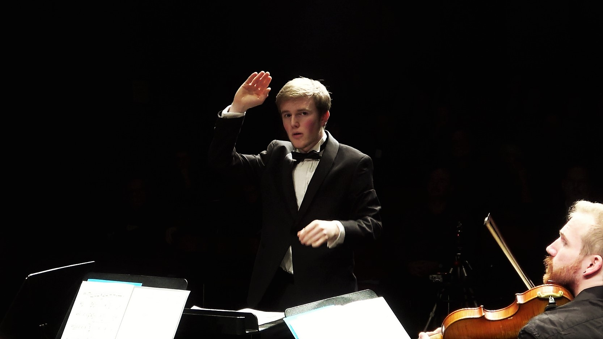

Ruben Hawer is a Dutch conductor. He studied orchestral conducting with Prof. Ulrich Windfuhr in Hamburg and Prof. Jorge Rotter in Salzburg. He also received important musical impulses from Peter Gülke, Jorma Panula, Nicolás Pasquet, Johannes Schlaefli, Alexander Polyanichko, Bruno Weil and others. During his studies, he worked with the NDR Vokalensemble, the NDR Elbphilharmonie Orchestra and collaborated with the theater choirs of the Semperoper Dresden and the Gärtnerplatztheater Munich. Currently, Ruben is choral director and Kapellmeister at the Theater Hof (Germany), where he was entrusted with the musical direction of Peterchens Mondfahrt and has conducted several performances of various productions, including Bizet’s Les Pêcheurs de Perles and Humperdinck’s Dornröschen. He also serves as chief conductor of both the Junges Mozart Orchester and the Mozart Kinderorchester Salzburg, with which he led a concert at the 2025 Salzburger Festspiele.
Upcoming Concerts
Thu 26 March 2026
Selb, Rosenthal Theater
E. Kálmán
Sat 2 May 2026 (Premiere)
Theater Hof, Großes Haus
R. Zandonai
Past Concerts
Sun 18 January 2026
Theater Hof, Großes Haus
E. Kálmán
Sat 24 January 2026
Theater Hof, Großes Haus
E. Kálmán
Fri 26 December 2025
Theater Hof, Großes Haus
P. I. Tchaikovsky
Sun 30 November 2025
Theater Hof, Großes Haus
E. Idle & J. Du Prez
Fri 21 November 2025
Theater Hof, Großes Haus
E. Idle & J. Du Prez
Sat 19 July 2025
Salzburg, Universitätsaula
Junges Mozart Orchester
Wed 16 July 2025
Theater Hof, Großes Haus
G. Bizet
Sat 12 July 2025
Theater Hof, Großes Haus
G. Bizet
Sun 06 July 2025
Theater Hof, Großes Haus
G. Bizet
Fri 04 July 2025
Theater Hof, Großes Haus
G. Bizet
Sat 28 June 2025
Theater Hof, Großes Haus
G. Bizet
Sat 26 April 2025
Theater Hof, Großes Haus
Peter Stone and Maury Yeston
Fri 25 April 2025
Theater Hof, Großes Haus
Peter Stone and Maury Yeston
Wed 12 February 2025
Theater Hof, Großes Haus
Paul Abraham
Sun 26 January 2025
Theater Hof, Großes Haus
Paul Abraham
Fri 24 January 2025
Theater Hof, Großes Haus
Paul Abraham
Wed 18 December 2024
Theater Hof, Großes Haus
E. Humperdinck
Sun 15 December 2024
Theater Hof, Großes Haus
E. Humperdinck
Thu 21 November 2024
Theater Hof, Großes Haus
L. Birzer
1–3 July 2024
Bad Ischl, Lehar Theater
A. R. Schweiß
can be used for professional purposes
Portrait Photo
© Harald Dietz

All live recordings
Fan or Booking? Drop a note!